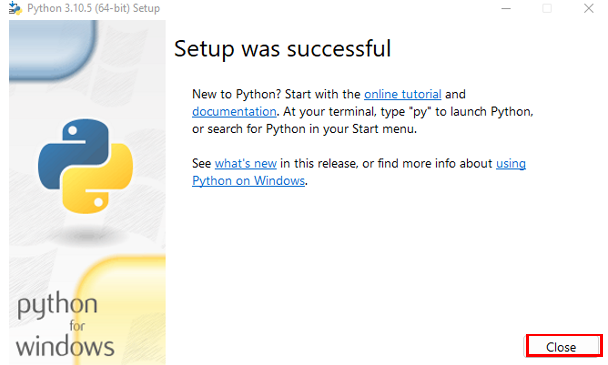
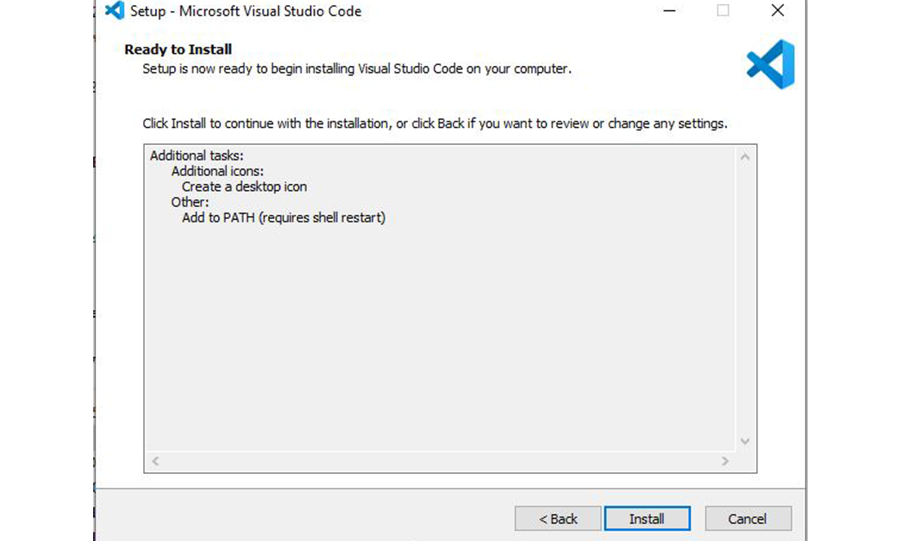

การติดตั้งโปรแกรม และถาษาในการเขียนโปรแกรม
ภาษา Python
1.ดาวโหลด Python Version ล่าสุดจากหน้าเว็บ https://www.python.org/downloads/
2.กดดาวโหลด
3.กดเปิดเมื่อโหลดดสร็จ
4.จากนั้นกด Install Now
5.รอจนกว่าจะ Install เสร็จ
6.แล้วกด Disble path length limit
7.จากนั้นกด Close

การติดตั้ง visual studio code
1.กดติดตั้ง ดาวโหลดจากหน้าเว็บhttps://visualstudio.microsoft.com/downloads/
2.กดเปิดเมื่อ Install เสร็จ
3.พอเปิดขึ้นมาแล้วจะมีหน้าต่าง ขึ้นมาให้เรากดเลือกไปที่ i accept the agreement หรือ ยอมรับข้อตกลง และกด next
4.จากนั้นจะมีหน้าต่างขึ้นมาไว้เลือกโฟลเดอร์ในการติดตั้ง สามารถเลือกได้โดยการกดที่ browse.. ให้เราทำการเลือกแล้วกด next
5.จากนั้นจะมีหน้าต่างการตั้งค่ากำหนดทางลัด บน start menu ของตัวโปรแกรมขึ้นมา ให้เรากด next
6.จากนั้นจะมีหน้าต่างการตั้งค่า ซึ่งเราสามารถเลือกกำหนดให้ icon ของตัวโปรแกรมมาปรากฎบนหน้า desktop หรือไม่โดยการกดติ๊กไปที่ช่อง Create a desktop icon
7.จากนั้นจะมีหน้าต่างในการติดตั้งให้เรากด install

8.ให้เรารอจนกว่าจะติดตั้งเสร็จ เท่านี้การติดตั้งก็เสร็จเรียบร้อย